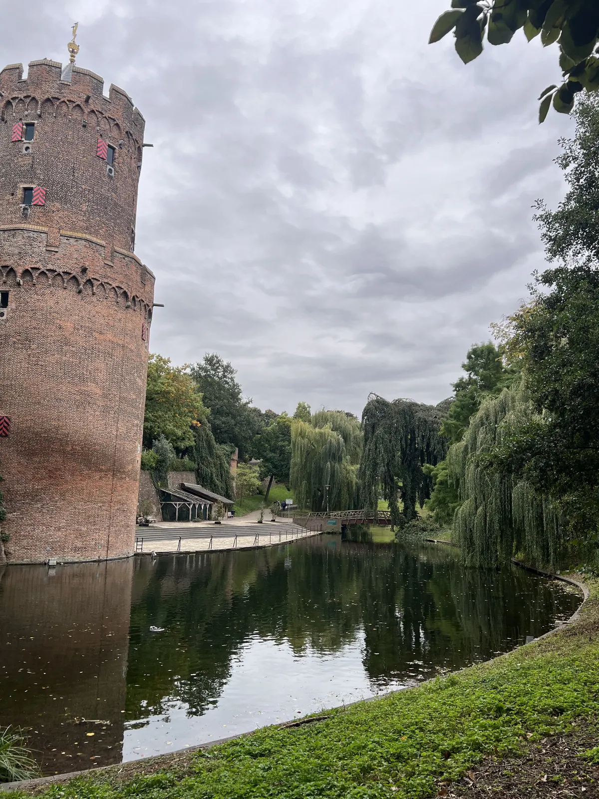
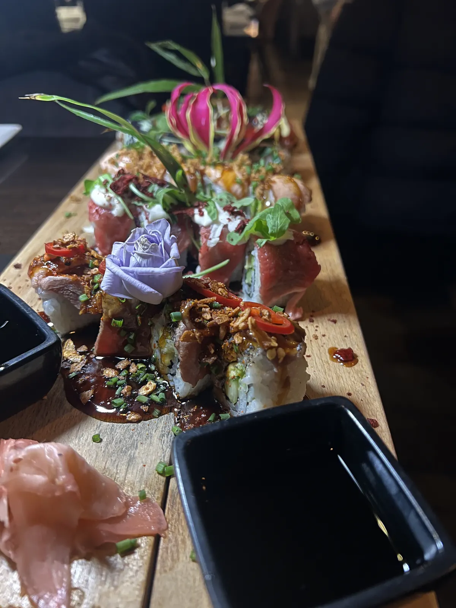
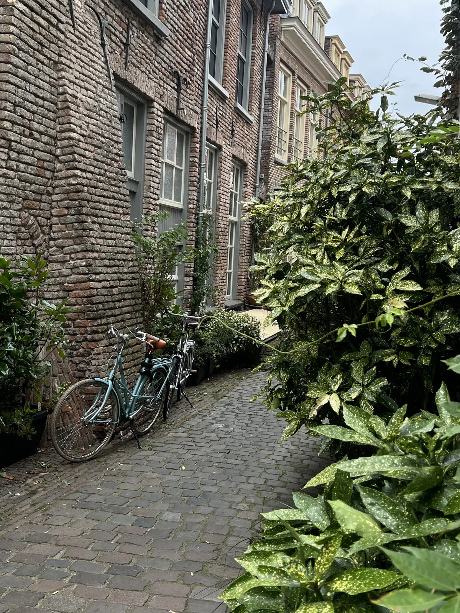
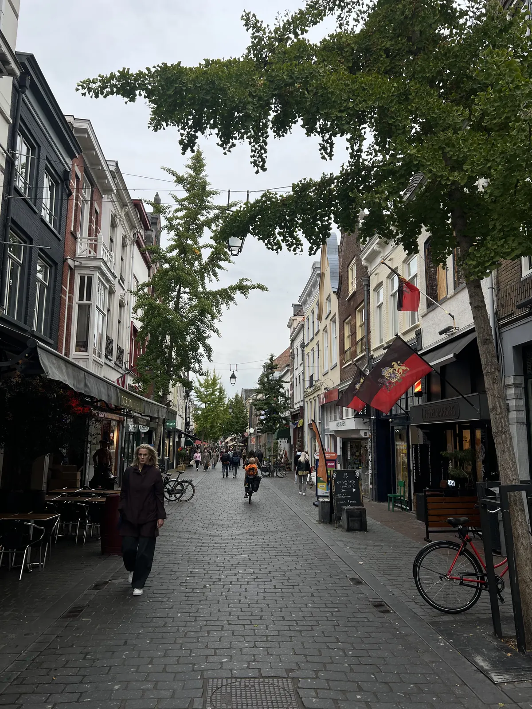
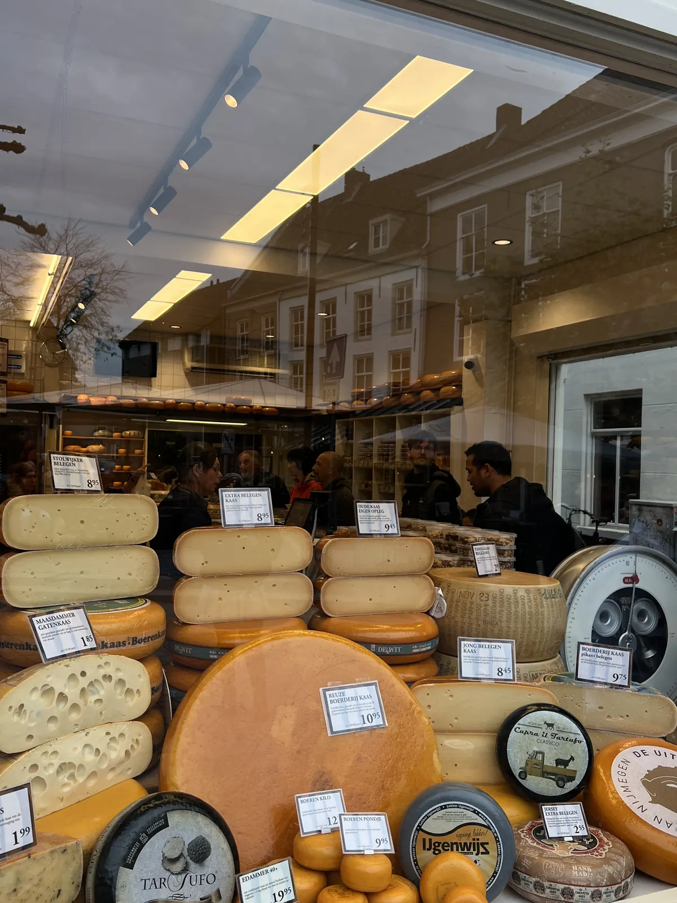

🇳🇱 Nijmegen Guide: 10 places – Waalkade, Valkhof & the oldest city in the Netherlands

Table of contents
Nijmegen is considered the oldest city in the Netherlands and lies just a stone’s throw from the German border – a perfect short trip from NRW.
Prices and times are guidelines (2026).
🗺️ Map: all 9 places
My story in Nijmegen
My tip: an evening on the Waalkade – Nijmegen is the oldest city in the Netherlands and only a stone’s throw from the German border.
This guide contains affiliate links (GetYourGuide, Omio). If you book through them I earn a small commission – you never pay a cent more. Prices and opening hours change – double-check before you go.
🆓 Free things to do
4 places in Nijmegen you can enjoy without an entry fee or completely free (for some, only a part costs extra, e.g. a tower or museum):
At a glance
Getting to Nijmegen
From NRW you reach Nijmegen by regional train or car in a short time (check timetables beforehand). The old town is small and easy to explore on foot.
Nijmegen station lies on the edge of the old town, about a 10–15 minute walk to the Grote Markt. From the German border it is not far: from Düsseldorf, Cologne or the Ruhr area you get there by regional trains with a change, often in under two to three hours (check timetables beforehand).
In the city you are best on foot or by bike; rental bikes are available at the station. Parking in the city centre is expensive – use the car parks on the edge.
1. Must-sees
Waalkade
The promenade along the river Waal: cafés, terraces and views of the bridges. It is nicest here in the evening.
The Waalkade runs along the south bank of the Waal, the main arm of the Rhine in the Netherlands. From the bank you see the large Waal Bridge and, on the other side, the modern city bridge “De Oversteek”. In summer people sit outside, in winter they move to the warm café.
Stroll along the promenade in the evening and find a place with a terrace. A bike is the best way to continue along the river into the Ooijpolder.
Tip: Come at sunset and find a spot with a view of the bridge.

Valkhofpark🆓 Free to experience
The park lies on a hill above the Waal, once the site of Charlemagne’s palace. It preserves St Nicholas’ Chapel and ruins. The view of the Waal Bridge is lovely.
In the Middle Ages the Valkhof was an imperial palace: Charlemagne is said to have had a palace built here around 777, and later Frederick Barbarossa built a castle. Preserved today are the small St Nicholas Chapel (11th century) and ruins of the Barbarossa castle. From a terrace you look over the Waal and the bridge.
Right in the park lies the Museum Het Valkhof. The park is accessible all day; it is quiet, especially in the morning or evening.
Museum Het Valkhof
The museum shows art and archaeology in a modern building with lots of glass, designed by the architecture firm UNStudio. The collection includes Roman finds from Nijmegen (which was once called Noviomagus), medieval objects and paintings. The Roman section is especially good if you want to understand why Nijmegen is considered the oldest city in the Netherlands.
Plan one to two hours. Check opening times and admission beforehand; the museum is usually closed on Mondays.
Tip: Start with the Roman section – it explains the rest.
Waal Bridge & “De Oversteek” – the 1944 river crossing🆓 Free to experience
The Waal Bridge from the 1930s was in September 1944 the scene of one of the most famous actions of Operation Market Garden: American paratroopers crossed the Waal in assault boats and captured the bridge. A memorial on the bank commemorates it.
Today you can cross the bridge on foot or by bike and see the city from a different perspective. On the other side of the river stands the new city bridge, “De Oversteek” (“The Crossing”) – named after the historic crossing. Plan a walk at sunset.
Tip: Walk across the bridge and look back at the Waalkade – the best photo.
Grote Markt, St Stephen’s Church & Waag🆓 Free to experience
The Grote Markt is the heart of the old town: around the square stand the St Stephen’s Church, the Waag (weigh house of 1612) and cafés with terraces. The Stevenskerk is a large Gothic church in whose tower – at certain times – you can climb up to enjoy the view over the city.
The square is lively on market days, and in the evening people sit outside. Come here if you want to experience student-city atmosphere and old town in one – Nijmegen has a well-known university that gives the city a youthful atmosphere.
Tip: Combine a market visit with coffee on a terrace and the tower climb, if open.
Old-town lanes: Lange Hezelstraat & Hoogstraat🆓 Free to experience
The Lange Hezelstraat is one of the oldest streets in the city, today a pedestrian zone with small shops, cafés and restaurants. Between the Grote Markt and the side lanes you find boutiques, bookshops and breweries. The Hoogstraat takes up the bustle and leads to the Valkhof.
If you like to stroll, plan an hour and take time for a coffee. Many shops only open around 10–11 a.m.
Tip: Come in the morning or late afternoon when it is quieter.



Four Days Marches & Via Gladiola
Every year in July Nijmegen hosts the International Four Days Marches – the largest multi-day walking event in the world. Tens of thousands of participants walk about 30 to 50 kilometres each day for four days, accompanied by music and cheering spectators. The last day ends on the Via Gladiola, where flowers are handed out.
At the same time the Vierdaagsefeesten take place, a large city festival with music and stages. If you travel in July, book accommodation early; the city is full then. Even outside the event, signs and memorials recall the tradition.
Tip: If you come in July, book early and expect the city to be full.
2. Hidden gems & surroundings
Kronenburger Park & Kruittoren💎 Hidden gem
Kronenburger Park is a small park with ponds, paths and a piece of the old city wall; here stands the Kruittoren (powder tower) as a remnant of the fortifications. It lies on the edge of the old town and is much quieter than the Waalkade.
Many locals walk or read here. If you need quiet it is a good retreat after the bustle of the old town. Plan half an hour.
Tip: Bring a coffee and take a short break here.
Ooijpolder – bike ride along the river💎 Hidden gem
East of the city lies the Ooijpolder, a river landscape on the Waal with meadows, dikes and nature areas where beavers, geese and birds live. A bike is ideal: you ride along the dike, see cows and horses and can stop at small cafés.
Plan a tour of two to three hours; rent a bike in the city if you do not have one. In strong wind the dike can be tiring – start into the headwind.
Tip: Start into the wind and plan a coffee break in the village of Ooij.
Liberation Museum & War Cemetery Groesbeek
Just a few kilometres south-east lies Groesbeek, where the National Liberation Museum 1944–1945 commemorates the liberation of the Netherlands. You see everyday objects, films and scenes that tell the story of the time around Operation Market Garden – also from the perspective of the civilian population.
Nearby lies the Canadian War Cemetery, a quiet place with thousands of graves of fallen soldiers. Get there by bus or bike; check opening times beforehand. Plan half a day.
Tip: Combine both with a bike ride through the hills.
What makes Nijmegen special
Nijmegen is considered the oldest city in the Netherlands. More about the country in my Amsterdam guide.
📍 Save this guide to Google Maps
1. Quick: open as a route
2. Permanent: as your own map (2 minutes)
- Download the file with all pins (KML button below).
- Open Google My Maps → “Create a new map” → “Import” → choose the file.
- Done – every place sits exactly where it should, with number, tip and a link back to the guide.
- In the Google Maps app the map appears under “Saved” → “Maps”, also on the go.
⬇️ All pins for Google Maps (KML) ⬇️ Download place list (CSV)
3. Save one by one
Your plan
Day 1: Day 1 – Old town & history
- Morning – Grote Markt, Stevenskerk, old-town lanes
- Midday – lunch in the Lange Hezelstraat
- Afternoon – Valkhof Park, Museum Het Valkhof
- Evening – Waal Bridge at sunset and Waalkade
Day 2: Day 2 – Surroundings
- Morning – Ooijpolder by bike
- Midday – coffee break in the village
- Afternoon – Groesbeek: Liberation Museum and war cemetery
FAQ
Is Nijmegen worth a day trip from NRW?
Yes, distances are short and the old town is compact.
How many days do you need in Nijmegen?
Why is Nijmegen considered the oldest city in the Netherlands?
🗺️ All places on my map → More guides and reels on Instagram: @hiddengem.atlas
Share this guide: On WhatsApp